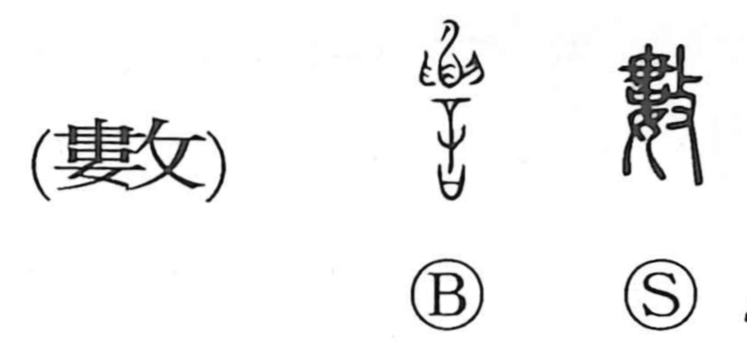

数

Kun: kazu, kazoeru, semeru, shibashiba | On: suu, su
number ・ to count ・ several ・ often ・ to attack ・ rule ・ fate
Explanation
数 abbreviates 數, made from 婁 and 攴. 婁 shows a woman with her hair piled high; 攴 adds a hand holding a striking implement. The act is beating and disarranging the hair.
Such treatment was used in reproaching or punishing a woman, giving the sense of blaming or urging. The many loosened strands also give multiplicity: things scattered into numerous separate parts. From their number comes counting and reckoning.
A reckoning leads to a determinate result. 数 therefore extends to an order or principle that governs events, including the course of a dynasty or an allotted fate. It can also mean repeatedly or frequently. The older senses of reproach, multiplicity, and recurrence remain alongside the familiar numerical use.